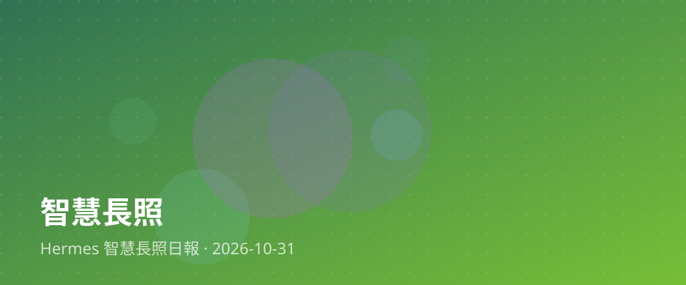

FHIR串聯長照資料，打造智慧照護新基石

在當前的長照環境中，各個機構與醫療院所往往使用不同的資訊系統，導致長者的健康數據難以互通，形成一個個資訊孤島。近期業界積極推動「FHIR（健康照護互通性資源）走進長照場域」，透過標準化的資料格式與聯測工具，為台灣的智慧長照打下重要的資料互通基礎，讓照護資訊能真正流動起來。
對台灣的長照現場而言，這項技術突破具有深遠意義。過去跨機構轉銜時，照顧紀錄常需重新謄寫或紙本傳遞，耗時又容易出錯。當FHIR標準建立後，長者的病史、用藥與照護需求能無縫對接，不僅能大幅減輕第一線照護人員的行政負擔，也能讓家庭照顧者在面對長輩出院準備或機構轉介時，享有更安心、連續的照護品質，減少資訊落差帶來的焦慮。
對於想投入長照產業的夥伴來說，未來的長照不再只是勞力密集的工作，而是結合大數據與數位工具的專業領域。掌握健康資訊互通的概念與應用，將成為職場上的重要優勢。我們期待在政策與實作指引的帶領下，台灣的智慧長照能穩健前行，用科技串聯起每一位長者的高齡福祉。
📰 本篇主要新聞來源
🔗 相關新聞